“Sharaf weyn ayay noo tahay inaan soo bandhigno Warbixinta Waxqabadka Xukuumadda 13-aad ee MAJSO ee sanad-dugsiyeedka 2025/2026. Sanadkan waxaan xoogga saarnay adeegga ardayda, horumarinta aqoonta iyo xirfadaha, iyo xoojinta midnimada iyo wadajirka bulshada ardayda. Waxaan u mahadcelinaynaa dhammaan ardayda, maamulka Jaamacadda Soomaaliya, macallimiinta iyo cid kasta oo gacan ka geysatay waxqabadkii.”
— AYUB AHMED GACALXUKUUMADDA 13-AAD EE MAJSOWARBIXINTA
WARBIXINTA
WAXQABADKA
“MAJSO MIDEYSAN, MAAMUL ARDAYDA LA DAREEN AH”
SANAD-DUGSIYEEDKA 2025 / 2026
U' Adeegida ardayda, horumarinta aqoonta, xirfadaha, wacyigelinta, isdhexgalka iyo waxqabadka Xukuumadda 13-aad ee MAJSO.
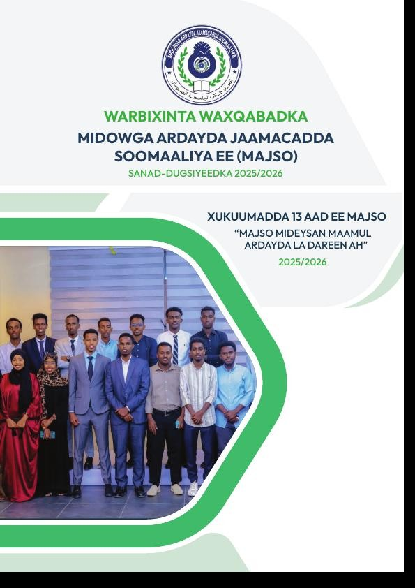
XUKUUMADII
13-AAD
13-AAD
0Kuliyad
0WAX
QABAD
QABAD
SANAD-DUGSIYEEDKA2025/26Waxqabadka Xukuumadda
FARRIIMAHA HOGGAANKA
Farriinta Guddoomiyaha & Ku-xigeenka
QAAR KA MID AH WAXQABADKA XUKUMADII 13 AAD
BARNAAMISHYO & CIYAARO
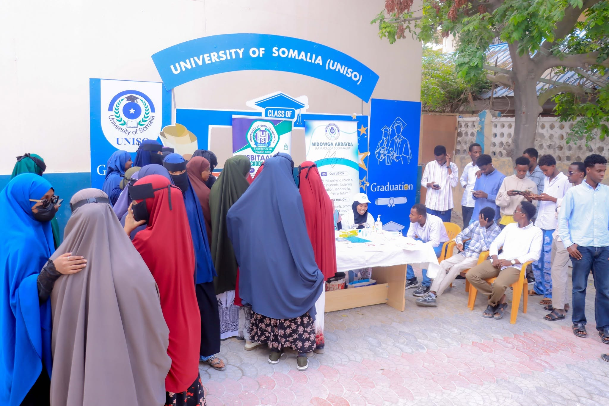
●Ogow Nooca Dhiiggaaga
Barnaamij wacyigelin iyo caafimaad oo ardayda lagu baraarujiyay ogaanshaha nooca dhiigga iyo muhiimadda dhiig-bixinta.
Akhriso qaybta →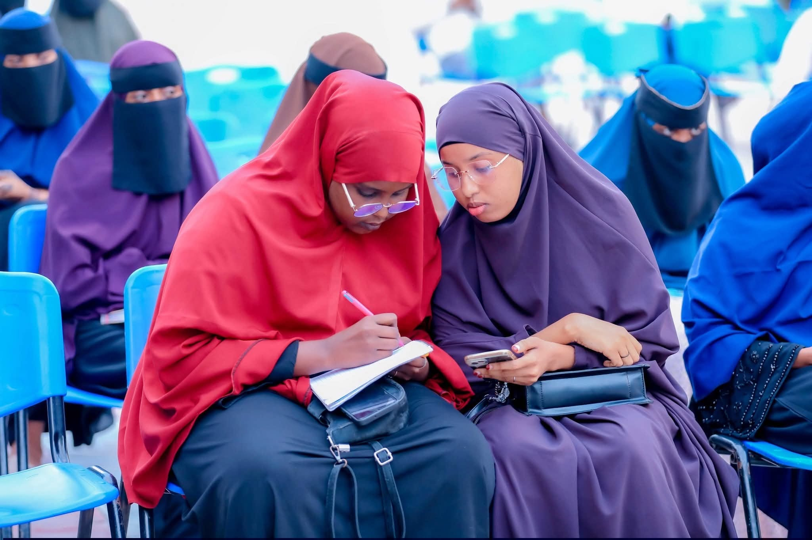
⌁Saameynta Tiknoolajiyadda
Dood-cilmiyeed looga hadlay saameynta tiknoolajiyadda ee waxbarashada, dhaqanka iyo suuqa shaqada.
Akhriso qaybta →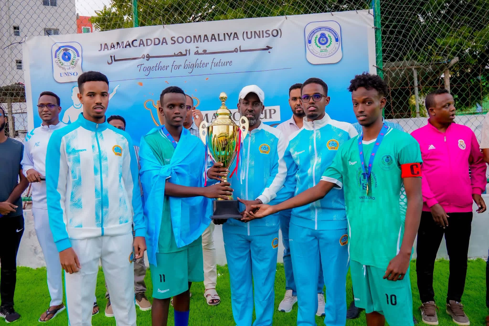
★MAJSO CUP 2026
Tartanka sanadlaha ah ee kubadda cagta, kaas oo ay ka qayb galeen 7 kuliyadood; finalkana ay wada ciyaareen FECS iyo Management & Economics.
Akhriso qaybta →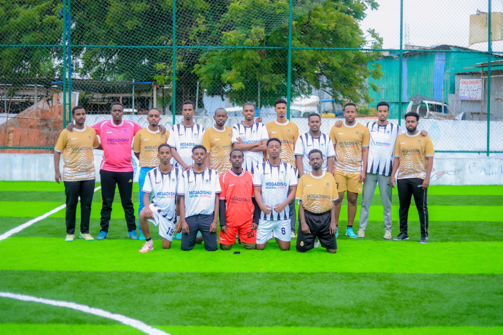
↔MAJSO Legends vs Leaders
Ciyaar saaxiibtinimo oo xoojisay midnimada iyo xiriirka xubnihii hore iyo hoggaanka hadda ee MAJSO.
Akhriso qaybta →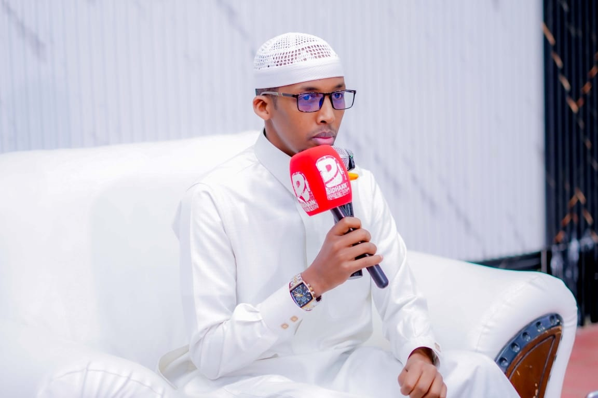
●Baraarugga Bulshada
Barnaamij wacyigelin ah oo bulshada iyo ardayda lagu baraarujiyay muhiimadda aqoonta iyo wadajirka.
Akhriso qaybta →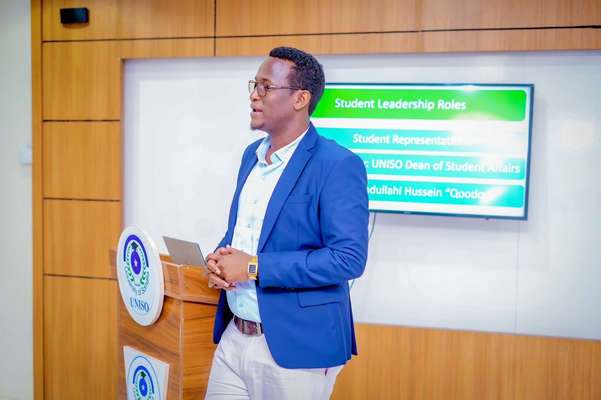
⌁Doorka Hoggaamineed ee Midowga iyo Horumarinta Ardayda
Barnaamijku wuxuu diiradda saaray hoggaaminta ardayda, wada-shaqeynta iyo doorka Midowga ee horumarinta bulshada jaamacadda, iyadoo lagu dhiirrigeliyay masuuliyad, ka-qaybgal iyo horumarinta adeegyada ardayda .
Akhriso qaybta →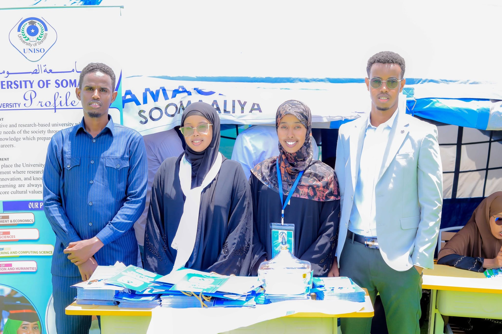
★Barnaamijka Kobac
Barnaamijka Kobac wuxuu ardayda ka caawiyay doorashada jaamacadda, kulliyadda iyo takhasuska ku habboon, iyo diyaar-garowga nolosha jaamacadeed.
Akhriso qaybta →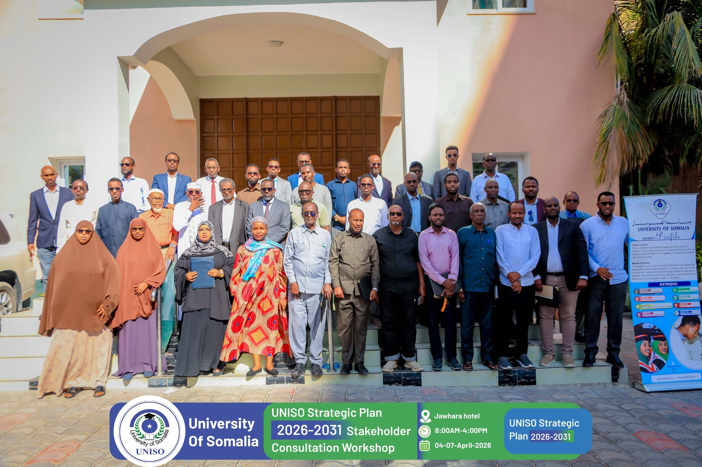
✦UNISO Strategic Plan 2026–2030
Xukuumadda 13-aad ee MAJSO waxay ka qayb qaadatay diyaarinta Qorshaha Istaraatiijiyadeed ee Jaamacadda Soomaaliya 2026–2030, iyadoo matalaysa aragtida iyo baahiyaha ardayda.
Akhriso qaybta →SAWIRRO LAGA SOO QAATAY WAXQABADKII XUKUMADDII 13 AAD
HAL SANO OO WAXQABAD AH, XUSUUS MUUQAAL AH
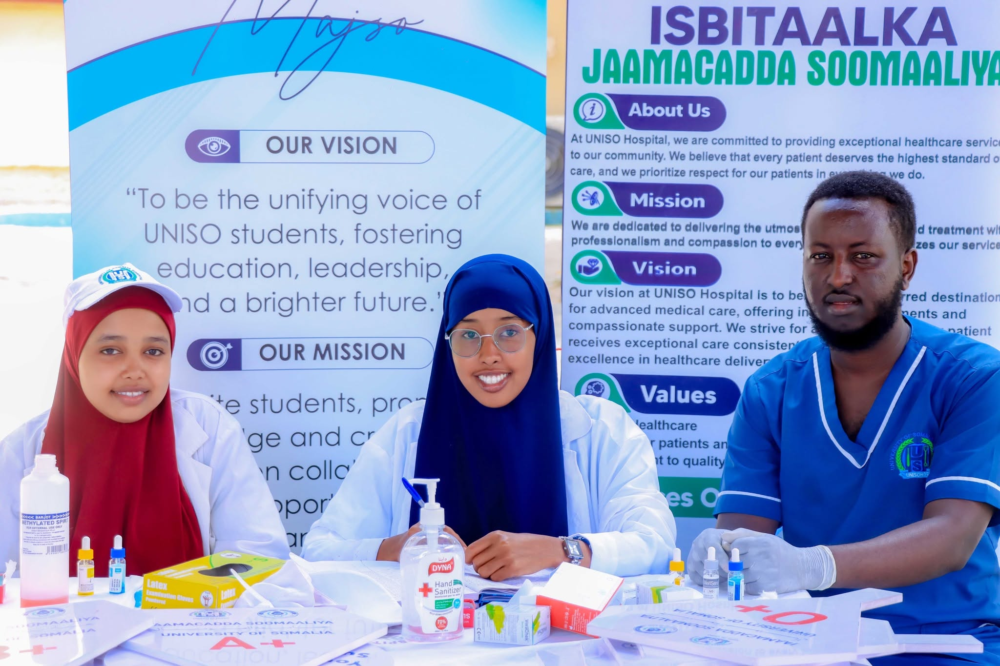
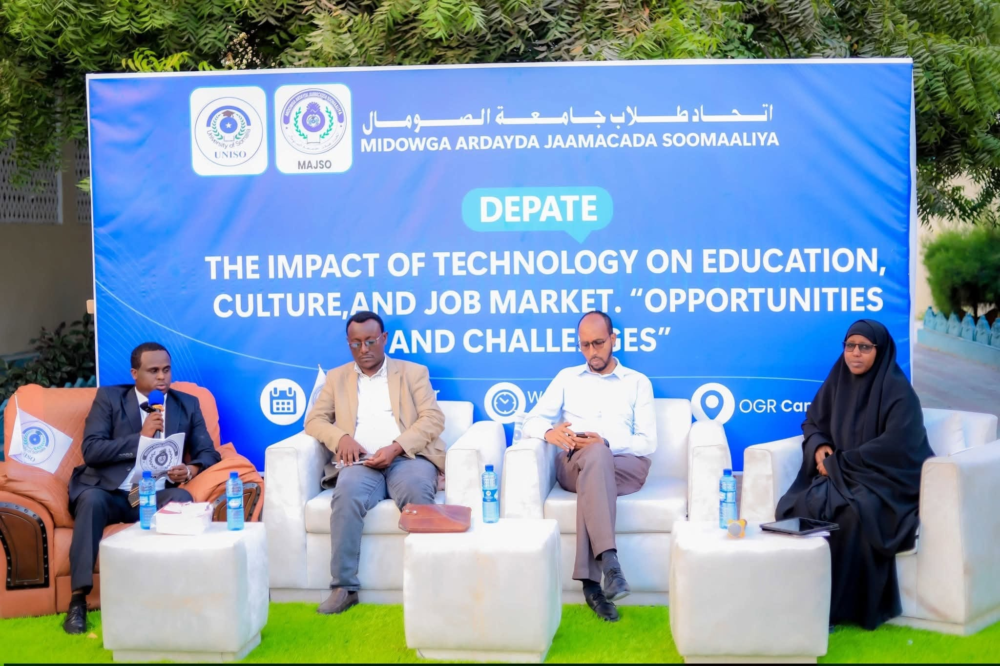
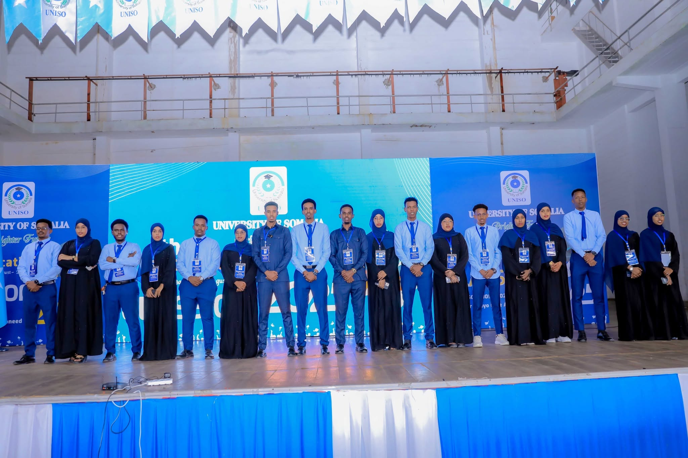
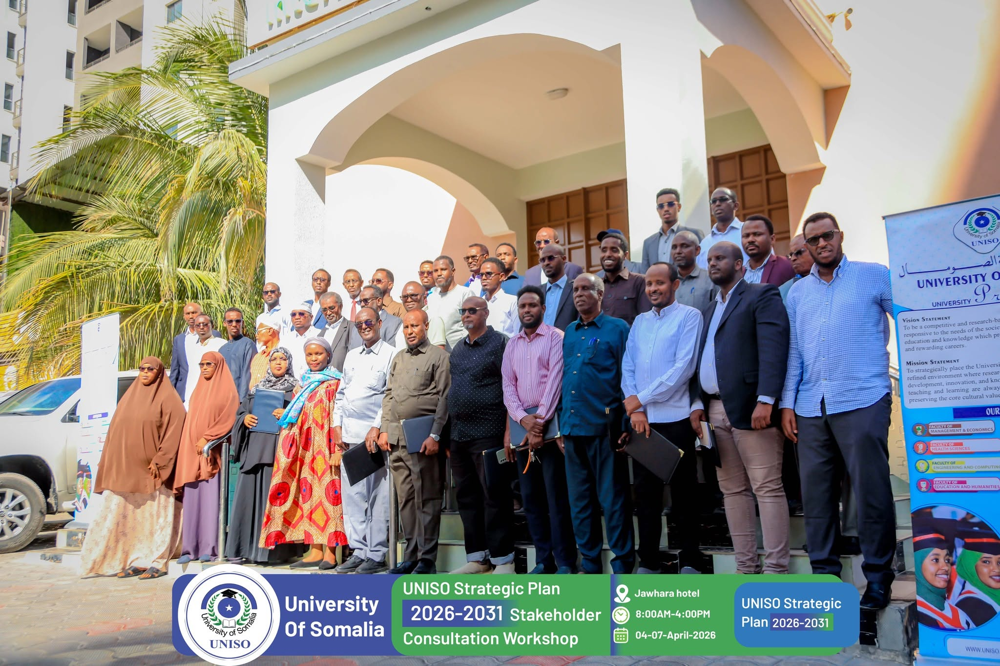
▶
VIDEO-GA WAXQABADKASCAN QR CODE
MAJSO • 2025/2026
↑ Bilowga Bogga